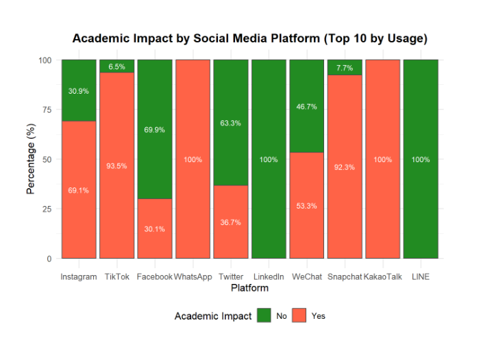
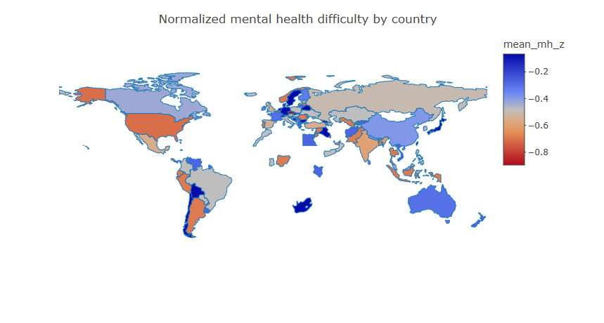
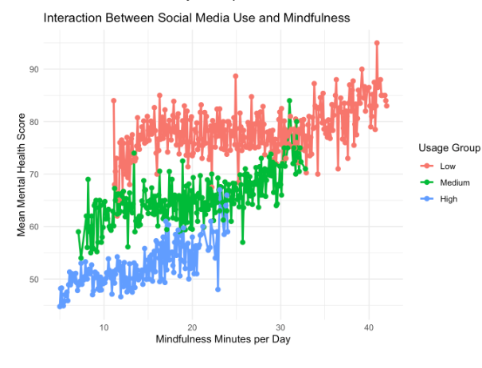
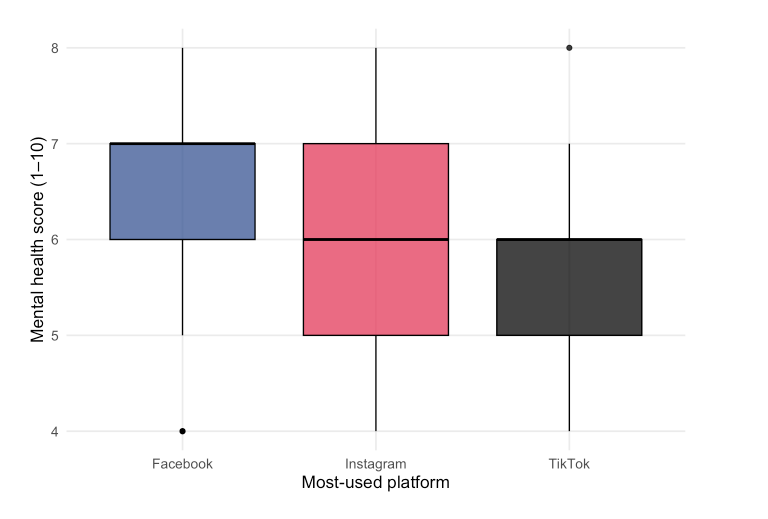

How is social media usage associated with indicators of anxiety, depression, and attention difficulties among young adults worldwide?
Introduction
Social media has gone from fun to something most young adults use as an every day essential. Platforms like Instagram, TikTok, and Snapchat are built into how people socialize with one another in our society. At the same time, there has been a lot of concern about rising levels of anxiety, depression, and difficulty concentrating among young people.
Our overarching question in this project is:
How is social media usage associated with indicators of anxiety, depression, and attention difficulties among young adults worldwide?
To analyze this we decided to create specific questions for each team mate to focus on and answer. For example, how overall screen time relates to anxiety and depression scores, how addictive patterns of social media use show up in relationships and productivity, or how usage and well being compare across countries and platforms. Each of us then started an analysis using real data sets; mostly survey data on technology use and mental health, and wrote up an individual technical report.
This final summary pulls those pieces together into a single story. We briefly describe the data we used and their main limitations, highlight a small set of key visualizations and explain what all of our analyses suggest about the link between social media and mental health. Our goal is to show what the data we have can and cannot say about this relation and to point to where more careful research is still needed.
Specific Questions
Motivations and Importance of the Analysis
Social media has become a defining feature of daily life for young adults across the world. Platforms such as Instagram, TikTok, and Facebook shape how people communicate, learn, form identity, and perceive themselves and others. While these platforms offer connection and creativity, there is growing concern that heavy and habitual use may be linked to rising levels of anxiety, depression, attention difficulties, and academic stress.
This concern is no longer anecdotal. Universities, families, employers, and policymakers increasingly seek evidence based insight into how digital behavior influences mental well being. The motivation behind this analysis is to move beyond generalized claims about social media being “good” or “bad” and instead examine how different patterns of use relate to specific mental health outcomes. Young adults are not a uniform group.
They differ in how long they spend online, which platforms they prefer, the type of content they consume, and how deeply social media is integrated into their daily routines. Understanding these distinctions is essential for identifying where risks may be concentrated and where interventions might be most effective. This project is important because it connects individual behavior to broader global trends. Mental health challenges among young adults have risen worldwide over the same period that social media usage has expanded rapidly.
By analyzing multiple datasets and perspectives together, the study helps clarify whether this parallel growth reflects meaningful associations or coincidental timing. The findings have implications for academic institutions designing student support services, for parents and educators guiding responsible use, and for public health discussions around digital well being.
Ultimately, this analysis aims to inform thoughtful decision making. Rather than encouraging fear or avoidance of social media, it seeks to provide clarity on how usage patterns relate to emotional health, attention, and performance, empowering individuals and institutions to promote healthier digital habits.
How the Specific Analyses Address the Overarching Question
The overarching question asks how social media usage is associated with anxiety, depression, and attention related difficulties among young adults worldwide. Each specific analysis contributes a distinct and necessary perspective, together forming a comprehensive understanding of this relationship.
i) Understanding everyday social media habits and emotional well being: The first analysis examines daily habits such as platform choice, time spent online, and content engagement to understand whether these behaviors predict emotional well being. This directly addresses how routine social media use connects to feelings of stress, anxiety, or emotional balance. It establishes the foundation by linking everyday usage patterns to mental health indicators.
ii) Examining attention and academic impact: The second analysis focuses on student’s academic performance as a real world reflection of attention difficulties and cognitive strain. By assessing how excessive daily social media use relates to academic disruption, this analysis connects digital behavior to concentration, productivity, and stress, highlighting how mental health challenges may surface in educational outcomes.
iii) Comparing mental health outcomes across platforms: The third analysis compares mental health and addiction scores across major platforms including Facebook, Instagram, and TikTok. This comparison reveals that not all platforms are experienced equally, helping identify whether certain social media environments are more strongly associated with anxiety, depression, or addictive behaviors.
iv) Examining mental health trends at a population level: The fourth analysis examines trends in mental health difficulties alongside global growth in social media usage. This broader view helps assess whether rising mental health concerns align with the worldwide expansion of social media, providing important context beyond individual level behavior.
v) Connecting usage intensity to mental health outcomes: Finally, the fifth analysis integrates usage intensity with mental health outcomes, showing how different levels of engagement correspond to different psychological impacts. This analysis reinforces the idea that risk is not evenly distributed and increases with intensity of use. Together, these analyses collectively address the overarching question by connecting behavior, outcomes, platforms, and global trends into a unified narrative about social media’s role in young adult mental health.
Data Usage and Limitations
Our team relied on three large, public survey data sets, from Kaggle. Each data set focused on slightly different aspects of technology use, but they all shared a common overall structure. Survey respondents report how much time they spend on screens or social media and they answer questions about their well being. By combining insights across these sources, we can look at both individual level patterns and broader trends across different platforms and countries.
We chose these data sets for three main reasons. First, they give us direct measures of daily screen time and social media hours. Second, they include mental health indicators that are easy to read. These include; 1–10 stress scales, anxiety and depression scores, and overall mental health scores. Third, they are large and diverse: across projects, we work with thousands of young people from multiple countries, which helps us see whether patterns are consistent across similar settings instead of being driven by an outlier.
All three of the data sets are self reported online surveys, not official clinical studies or random samples of young adults worldwide. People may be biased when they are filling these surveys so we need to take that into account. We can do this by identifying large outliers ans see if the make sense. Finally, the data sets are cross-sectional: we see each person at one point in time, so we can detect associations between social media use and mental health, but we cannot say for sure that one causes the other.
Visualization of Most Important Findings

The chart shows the academic impact of the top 10 social media platforms. TikTok, WhatsApp, Snapchat, and KakaoTalk have the highest reported disruption, while LinkedIn, LINE, and Facebook show minimal impact. Instagram, Twitter, and WeChat have mixed effects, indicating that platform type and usage patterns influence academic outcomes. Overall, not all social media platforms affect academics equally.

This figure shows a clear positive relationship between daily social media usage and reported stress levels. As daily usage increases from roughly 0.5 to 4.5 hours, stress scores rise steadily across respondents. The fitted regression line confirms this upward trend, suggesting that heavier daily social media exposure is associated with higher perceived stress. While this visualization alone does not prove causality, it provides strong evidence of a systematic association between usage time and stress.

This map shows how average normalized mental health difficulty looks across the countries in our sample. Countries in warmer colors have worse-than-average mental health scores, while cooler colors indicate better-than-average scores, so some regions in our data appear to be struggling more with anxiety/depression than others.This shows that as social media use increases gloabaly there is an association link to mental health.

This plot looks at how mindfulness time and social media use interact for mental health. Across all three groups, students who spend more minutes on mindfulness per day tend to have higher mental health scores, but at every mindfulness level the low social media group scores highest, the medium group is in the middle, and the high-use group scores lowest. That suggests mindfulness helps everyone, but heavy social media users still report worse mental health overall, even when they practice a lot of mindfulness.

This visualization shows that mental health scores are pretty similar across different social media platforms, whether its the use of Facebook, Instagram, or TikTok as their main application. This supports the idea that increased social media use in general is linked to mental health difficulties, instead of the effect being driven by just one bad platform. However just looking at this we can see that Facebook has a linkage to higher mental health scores while Tik Tok has the lower end. The data is telling us that even though all platforms contribute to mental health. The lower scores lean toward Tik Tok.
How Our Findings Connect to Existing Research
Prior academic research has consistently shown a relationship between social media use and mental health outcomes, particularly stress, anxiety, and depression. One of the most influential studies in this area is Braghieri et al. (2022), which examined the roll out of Facebook across U.S. colleges between 2004 and 2006. Their findings showed that increased access to Facebook led to a 5–8% increase in depression and anxiety, with stronger effects observed among women.
While this study established an important causal link between social media adoption and mental health, it focused primarily on a single platform like Facebook, a single country like the United States, and relied on limited measures of actual usage behavior. As a result, it left open questions about how broader social media habits, such as time spent, platform choice, and usage patterns relate to emotional well being in more diverse and modern contexts.
Our project builds directly on this prior work by expanding the scope in several key ways. First, instead of focusing on one platform, we examine multiple social media platforms such as Instagram, TikTok, Snapchat, WhatsApp, and others. Thus allowing us to compare how different platforms relate to stress and addiction scores. Second, our data sets include global participants, addressing the limited geographic representation in much of the earlier literature. Finally, we incorporate self reported measures of daily usage hours, sleep patterns, and perceived addiction, which provide more detailed insight into how intensity of social media use; not just access, relates to emotional well being.
Overall, our findings are consistent with prior research in showing that higher levels of social media engagement are associated with worse emotional outcomes, such as increased stress, anxiety and depression. At the same time, our results extend the literature by demonstrating that these associations persist across platforms and populations. Thus, suggesting that the relationship between social media habits and emotional well being is not limited to a single platform or cultural context.
Potential Next Steps
Several extensions could strengthen and deepen the insights from this analysis. First, future work should prioritize longitudinal or panel data to move beyond correlation and better assess causal relationships between social media use and mental health outcomes. Tracking individuals over time would help determine whether increased usage precedes declines in well being, or whether individuals with poorer mental health are more likely to increase usage.
Second, incorporating objective digital trace data; such as device recorded screen time, notification counts, or app level usage logs would reduce reliance on self reported measures and help address reporting bias identified as a key limitation. Combining survey based mental health indicators with passive data collection could substantially improve measurement accuracy.
Third, future analyses could explore content level and platform design effects, distinguishing between passive scrolling versus active engagement, and between positive versus negative content exposure. This would allow a more nuanced understanding of why certain platforms like TikTok or Instagram are associated with worse outcomes. Fourth, expanding cross cultural and demographic stratification would help clarify heterogeneity in effects. Stratified analyses by region, age subgroups, or socioeconomic status could reveal whether observed patterns are universal or context specific.
Finally, future research could evaluate intervention strategies, such as screen time limits, notification reduction, or digital wellness tools, using experimental or quasi experimental designs. Testing whether such interventions mitigate anxiety, depression, or attention difficulties would provide actionable guidance for users, educators, and platforms. Together, these next steps would shift the analysis from descriptive association toward causal understanding and evidence-based recommendations, advancing both academic research and real world digital well being policy.
Conclusion
Our overall takeaway as a team is that higher social media use tends to show up alongside greater mental health difficulties in the data sets we analyzed. This lines up with our overarching question: “How is social media usage associated with indicators of anxiety, depression, and attention difficulties among young adults worldwide?” and backs up our individual specific questions by showing a clear, repeated pattern that heavier users generally report worse anxiety and depression scores.